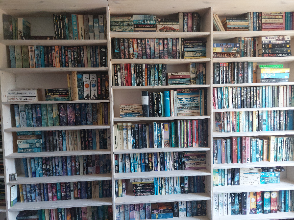

I'm a retired mechanical engineer
To keep my mind sharp I've learned and used python, access and excel programming to automate some cumbersome list keeping
I thought it fun to make my own website so now I'm learning just how to do that
I am an active reader of Science fiction and Fantasy books (I own some 1800 books and about 2000 booklets (the Perry Rhodan series, not complete however). Some of my favourites: Larry Niven, Django Wexler, John Gwynne, Eric Frank Russel and Raymond Fiest
I have a vegetable garden (together with a friend) where I grow my organic vegetables.
In the spare time left I like to do some computer gaming. My current favourites: Hearthstone, Civilization and Baldur's gate 3